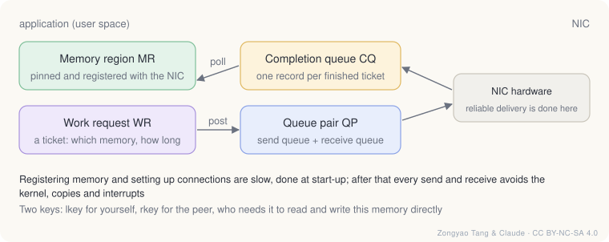
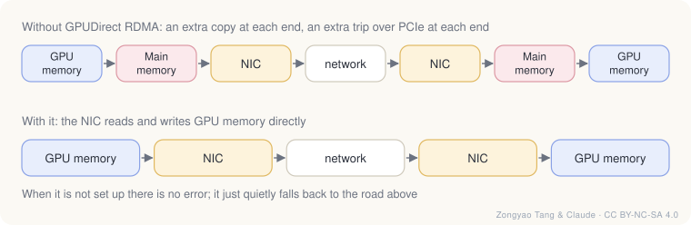

The thread: RDMA splits "sending data" into four objects → with these four objects two kinds of operation are possible, one of which needs no CPU at all on the other side → but this approach requires a network that almost never drops packets, which InfiniBand was designed for → Ethernet drops packets by nature, and RoCE has to make up for it → finally, replace memory with GPU memory and you have GPUDirect RDMA. If your cluster uses InfiniBand, the third card and the troubleshooting after it are closest to practice.
Part 5 · High-speed interconnects5.2 RDMA and InfiniBand
Translated by AI (Anthropic's Claude) from the Chinese edition. The Chinese original is the reference.
This unit answersHow does RDMA bypass the kernel and avoid copies? How do InfiniBand and RoCE differ?
Follows "the overhead of the kernel network stack" in 0.3: that unit said why the kernel should be bypassed; this one explains how.
- RDMA's four things: registered memory, queue pairs, work requests, completion queues
- RDMA write: write straight into the other side's memory, without its CPU knowing
- RDMA assumes a network that almost never drops packets; InfiniBand achieves this with "credits"
- RoCE: move the same transport onto Ethernet, then find a way to stop Ethernet dropping packets
- GPUDirect RDMA: what is registered is not main memory but GPU memory
Explanation
1RDMA's four things: registered memory, queue pairs, work requests, completion queues
To move data with RDMA, the application first "registers" a piece of memory with the network card and gets two keys; then sets up a "queue pair" (QP) with the other side; after that, each transfer is just putting a "work request" on the queue, saying which memory to transfer; when the card is done, it puts a receipt on the "completion queue". The whole process never enters the kernel.
As 0.3 said, traditional sockets go through four formalities on every send and receive: system call, copy, protocol processing, interrupt. RDMA's programming interface (called verbs) revolves around four objects and moves all of these formalities to "beforehand".

The four objects and how they relate Memory region (MR): register first, use later. Call the registration interface to tell the network card "this memory may be used for sending and receiving later". Registration does two things: pins the memory (0.3 explained why), and writes its address mapping into the network card. Registration gives two keys:
- The local key (lkey): used when sending data yourself.
- The remote key (rkey): handed to the other side, which needs it to read and write this memory directly.
Queue pair (QP): the two ends of a connection. Each QP has a send queue and a receive queue. Training uses the "reliable connection" type: a QP pairs with exactly one QP at the other end, and the network card guarantees data arrives in order and without loss. Once created, a QP must go through several state changes before it can be used, and this handshake is fairly slow.
Work request (WR): a ticket. To send data, the application fills in a ticket (the kind of operation, memory address, length, key) and puts it on the QP's send queue. This step just writes a few fields into memory shared with the network card and "rings a doorbell" to tell the card, without entering the kernel.
Completion queue (CQ): receipts. When the network card has carried out a ticket, it puts a completion record on the CQ. The application checks for new records itself (polling), again without entering the kernel.
Against the four costs of 0.3: the system call is gone (write to shared memory plus a doorbell); the copy is gone (the card takes the data straight from registered memory); protocol processing is done by the card's hardware; interrupts can be avoided (the application polls the CQ).
The cost is equally clear: registering memory and setting up QPs are slow operations, and registered memory is pinned and can no longer be shuffled by the system. So programs using RDMA prepare their buffers and connections at start-up.
Source walkthrough: the skeleton of one RDMA write in code
Below is the order of calls in the verbs interface. Real code has plenty of arguments at every step; only the skeleton is kept here, so that when reading NCCL's
net_ib.ccyou can recognise what each part is doing. The interface names are the standard ones from libibverbs, each documented in its manual.// —— one-off preparation —— ctx = ibv_open_device(dev); // open the network card pd = ibv_alloc_pd(ctx); // protection domain: groups the objects below together mr = ibv_reg_mr(pd, buf, len, access); // register memory, getting mr->lkey and mr->rkey cq = ibv_create_cq(ctx, ...); // completion queue qp = ibv_create_qp(pd, ...); // queue pair, type RC (reliable connection) // exchange QP numbers, addresses and rkeys with the other end (over an ordinary out-of-band connection) // then move the QP step by step into the usable state ibv_modify_qp(qp, ... INIT); ibv_modify_qp(qp, ... RTR); // ready to receive ibv_modify_qp(qp, ... RTS); // ready to send // —— each transfer —— wr.opcode = IBV_WR_RDMA_WRITE; // write straight into the other side's memory wr.sg_list = { buf, len, mr->lkey }; // where my data is wr.wr.rdma.remote_addr = remote_addr; // the other side's address wr.wr.rdma.rkey = remote_rkey; // the key the other side gave us ibv_post_send(qp, &wr, ...); // put it on the send queue, without entering the kernel ibv_poll_cq(cq, ...); // poll the completion queue for the receiptHold on to three things while reading:
- What happens only once. Everything from opening the device to the QP entering RTS is done once. Slow start-up, or errors at start-up, are mostly in this part. For instance, if
ibv_reg_mroribv_create_qpfails, a common cause given in NCCL's documentation is a too-small limit on how much memory may be pinned (memlock). - What the "out-of-band connection" is. The two ends first exchange QP numbers and keys over an ordinary TCP connection before the RDMA connection can be set up. OOB in NCCL's logs refers to this connection; if it chooses the wrong network interface, initialisation hangs.
- Each transfer is only two calls.
ibv_post_sendandibv_poll_cq. NCCL has a dedicated thread on the host looping over these two (6.2).
An analogyLike opening a dedicated loading bay at a warehouse: first register a set of storage spaces with the logistics company (register memory) and get their numbers; after that, each shipment is just a ticket dropped in the in-tray (a work request); the company comes and moves the goods itself, and leaves a note in the receipts tray when done (the completion queue). You do not go to the front desk for paperwork every time.
So RDMA's costs are concentrated in "setting up": registering memory and building connections are slow, and should be done in advance and reused. NCCL does all of this once at initialisation, leaving only the filling in of tickets during training.
Builds on Through the operating system's network stack, every packet passes many formalitiesThe operating system moves data around in memory; it must be "pinned" before it goes to a deviceUsed later in RDMA write: write straight into the other side's memory, without its CPU knowingGPUDirect RDMA: what is registered is not main memory but GPU memoryHash-based routing meets a few large flows: several flows collide on the same linkMost of the work is done once at initialisation: probe the topology, build rings and trees, connect every pair of GPUsSourcesRDMA Aware Networks Programming User Manual §3.3, key concepts: completion queues and memory registrationRDMA Aware Networks Programming User Manual §3.4: the flow of a typical applicationRed Hat: Understanding InfiniBand and RDMA- With these four objects, the possible operations fall into two kinds. The second is what makes RDMA distinctive.
2RDMA write: write straight into the other side's memory, without its CPU knowing
RDMA has two kinds of operation. send/recv takes both sides' cooperation: the receiver must post a receive buffer in advance. RDMA write and read are done by one side alone: the initiator, holding the other side's address and key, has the two network cards write data directly into (or read it out of) the other side's memory, with the other side's application and CPU taking no part at all.
Both sides cooperate: send and recv. The receiver first puts a ticket on its receive queue saying "put the next message that arrives in this memory"; then the sender sends. When the data arrives, the receiver's network card takes a receive ticket, writes the data where it says, and puts a record on the receiver's completion queue. If data arrives and the receive queue is empty, the sender gets a "receiver not ready" error and retries.
One side alone: RDMA write and read. The initiator writes the other side's memory address and remote key directly on the ticket. The other side's network card checks the key on arrival, then writes the data straight into that memory (write), or reads that memory's contents and sends them back (read). The other side's application filled in no ticket, and no record appears on its completion queue.
One-sided operations remove all software cost on the receiving side, but raise a question: how does the receiver know the data has arrived? A common way is "RDMA write with immediate": like an ordinary write it puts the data into the other side's memory, but it also carries a small integer and produces a record on the other side's completion queue.
How NCCL combines them (from Demystifying NCCL's analysis of the source):
- Between each pair of GPUs that communicate, two reliable-connection QPs are set up, one per direction.
- The receiver first sends a tiny "clear to send" message over the reverse-direction QP, containing the address and key of its receive buffer. This step both tells the address and controls the flow: if the receiver is not ready, the sender does not send.
- The sender uses one or more RDMA writes to put the large data directly into the other side's buffer.
- Finally a write with immediate tells the other side "this batch is written, this much in total".
5.3 comes back to this design of "the receiver first says it is clear to send": it turns out to be a means of controlling congestion in large clusters.
An analogyLike having the key to someone's letterbox: send/recv is knocking on the door and waiting for them to open it and take the parcel; an RDMA write is putting the parcel straight into their letterbox, without them even knowing you came.
So the receiving side has almost no CPU cost, which is the key to RDMA's low latency. The price is that the other side does not know the data has arrived and has to be told separately. NCCL's way: send the data with RDMA writes, then add one write carrying a "note" as the notification.
Used later in RDMA assumes a network that almost never drops packets; InfiniBand achieves this with "credits"The price of never dropping packets: congestion travels back along the links, and one slow spot slows a whole areaSourcesRDMA Aware Networks Programming User Manual §3.1, available communication operations: Send, RDMA Read, RDMA WriteDemystifying NCCL, page 5, the IB transport: QP layout and CTS- This approach of "the network card reading and writing memory directly" places a high demand on the network itself.
3RDMA assumes a network that almost never drops packets; InfiniBand achieves this with "credits"
RDMA's reliable delivery is implemented in network card hardware with very simple logic: if one packet is lost, everything from that packet on is resent, which is expensive. So it needs a network that almost never drops packets because of congestion. InfiniBand is designed that way: on every link, the receiving end tells the sending end "how much room I have left" (credits), and nothing is sent without credit.
Why packet loss is feared. TCP implements reliable delivery in the operating system, where it can use sophisticated algorithms: selective retransmission, fine-grained congestion windows. RDMA builds reliable delivery into network card hardware, where the logic must be simple. The common approach: when the receiver sees a gap in the sequence numbers, it asks the sender to resend everything from the missing packet on. On a 400 Gb/s link, one lost packet means resending a large stretch of data, and latency jumps from microseconds to milliseconds. Occasional physical errors can be handled this way, but if the network drops packets whenever it is congested, performance collapses.
What InfiniBand does. It is a whole network designed for this, a separate system from Ethernet:
- Credit-based flow control. On every link (network card to switch, switch to switch), the receiving end keeps telling the sending end how much room is left in its buffers. The sender sends only while it holds credits, and stops when they run out. So buffers never overflow, and no packets are dropped because of congestion.
- The subnet manager (SM). The whole network is configured by one central management program: it discovers the topology, assigns each port an address (LID), computes routes and installs them on every switch. Without a subnet manager running, ports stay in a "connected but not active" state.
- Speeds. Common generations: EDR is 100 Gb/s, HDR 200 Gb/s, NDR 400 Gb/s (all with 4 lanes combined).
What this means for troubleshooting. Since nothing is dropped, congestion shows up as data waiting for credits at the sender. So:
- "Waiting" has its own counter (transmit wait, xmit wait). If it keeps rising, this port often wants to send but cannot, and there is congestion downstream or a slow receiver.
- Physical-layer errors (poor signal quality, a faulty cable or optical module) are another kind of counter: symbol errors, link recoveries, link-down events. These really do cause retransmissions and slowdowns.
The two kinds of problem are handled in completely different ways: the first is a matter of traffic and topology (5.3), the second a hardware problem, solved by replacing cables or modules.
Troubleshooting: is an InfiniBand link healthy?
In order from simple to complex. The commands all come from the standard InfiniBand tool set, the same ones NCCL's official troubleshooting documentation lists.
Step one: is the port up, at the right speed?
ibstat
For each port, look at three lines:
State: Active: the logical state. Stuck at Initializing usually means no subnet manager is running on the network (confirm withsudo sminfo).Physical state: LinkUp: the physical state. Polling or Disabled means a cable is not seated properly or the other end is not up.Rate: the negotiated speed. An NDR card shows 400, HDR 200. Lower than expected means the link has slowed down (a cable, a module, or fewer lanes negotiated).
Step two: the error counters.
sudo perfquery -x # the extended counters of this machine's ports sudo perfquery -x <lid> <port> # a given port
Watch three; they should all be near 0 and not growing:
SymbolErrorCounter: physical-layer symbol errors.LinkErrorRecoveryCounter: how many times the link performed error recovery.LinkDownedCounter: how many times the link went down.
Their absolute values mean little (they may have accumulated long ago); read them again a few minutes later and see whether they are rising.
Step three: are two machines connected, and how fast?
# connectivity: on the other end run sudo ibping -S, then on this machine run sudo ibping <the other end's lid> # bandwidth: on the other end run ib_write_bw -d <device> -a, then on this machine run ib_write_bw -d <device> -a <the other end's address> # latency ib_write_lat -d <device> <the other end's address>
ib_write_bwmeasures "bare" RDMA bandwidth, without NCCL or a framework. If it cannot reach the card's rated speed, the problem is in the network layer and there is no need to look higher. Adding--use_cuda=<gpu number>uses GPU memory as the buffer, checking the GPUDirect RDMA path at the same time.Step four: retransmissions at the RDMA layer.
rdma statistic
During a test, watch whether counters such as sequence errors and timeouts grow; they indicate retransmissions.
A health check of the whole network is done with
ibdiagnet, which walks every switch and link and reports links with high error rates, links running slow, and routing problems. It is usually run by those who manage the cluster.An analogyLike crowd control at a metro station: when the platform is full, the gates stop letting people in. People queue outside the gates, but nobody gets pushed off the platform.
So on InfiniBand, congestion shows up not as lost packets but as "waiting". When troubleshooting, what to look at is not the loss rate but the wait counters on the links and the physical-layer error counters.
Builds on RDMA write: write straight into the other side's memory, without its CPU knowing"Slow" on the pipeline comes in only four kinds: waiting for data, on compute, for orders, for the other GPUsUsed later in RoCE: move the same transport onto Ethernet, then find a way to stop Ethernet dropping packetsThe price of never dropping packets: congestion travels back along the links, and one slow spot slows a whole areaRule things out layer by layer, from the bottom up: link → bare RDMA → NCCL → frameworkSourcesRDMA Aware Networks Programming User Manual §2.5: the subnet manager and switchesNCCL User Guide: Networking Troubleshootingibdiagnet manual: error rates and link health checksibdiagnet manual: assessing congestion with xmit_wait- InfiniBand is a dedicated network. Many data centres prefer to maintain only Ethernet, so there is another road.
4RoCE: move the same transport onto Ethernet, then find a way to stop Ethernet dropping packets
RoCE puts InfiniBand's transport layer, unchanged, inside ordinary UDP/IP packets running over Ethernet. The verbs interface above is exactly the same. But Ethernet by default "drops when full", so two more things have to be configured: PFC lets a switch tell upstream to pause when it is nearly full; ECN lets the sender slow down by itself early in congestion.
The relationship. Think of the network in two halves:
- The top half (the transport layer and the verbs interface): RoCE and InfiniBand are the same. Applications, NCCL, and the reliable-delivery logic in the network card need no change.
- The bottom half (the link and network layers): InfiniBand uses its own addresses, routing and credit-based flow control; RoCE uses Ethernet and IP. RoCE today usually means version two: RDMA packets wrapped in UDP, able to cross routers.
Making up for "no packet loss". By default an Ethernet switch drops packets when a queue is full. RoCE uses two layers of mechanism to prevent this:
- PFC (priority-based flow control): a hard brake, hop by hop. When one of a switch's queues is nearly full, it sends a "pause" frame upstream, and upstream stops sending traffic of that priority. It has the same aim as credit-based flow control but is coarser: "shout stop when nearly full" rather than "send only when there is room".
- ECN plus congestion control (the common algorithm is called DCQCN): a soft brake, end to end. When a queue starts to grow, the switch marks the packets passing through; the receiver, seeing the marks, tells the sender; the sender's network card lowers its rate. The aim is to slow down before PFC is triggered.
Comparison.
InfiniBand RoCE How packet loss is avoided Credit-based flow control, built in PFC plus ECN, which must be configured correctly How the network is managed A subnet manager configures it centrally Ordinary IP routing Equipment Dedicated switches General-purpose Ethernet switches To the layers above The same verbs The same verbs Differences in troubleshooting. InfiniBand uses
ibstat,perfqueryand their kin; RoCE's ports are Ethernet ports, whose counters are read withethtool -S <interface name>, focusing on drops, pause frames and PFC-related counts. RoCE also has an extra class of configuration error: which address entry (GID) the network card uses, and which priority marking the traffic carries; get them wrong and connections fail to come up, or the traffic does not go into the lossless queue.If your cluster uses InfiniBand, knowing the principle in this card is enough; it is used when reading the Meta paper (5.3).
An analogyLike running a high-speed train on an ordinary railway: the train is the same, but the ordinary railway lacks the high-speed signalling system, and extra equipment has to be fitted to make sure trains do not run into each other.
So RoCE's advantage is that it uses general-purpose Ethernet equipment and operations; the price is that "no packet loss" depends on configuration, and getting it wrong causes performance problems that are hard to track down. Both are transparent to NCCL and PyTorch.
Builds on RDMA assumes a network that almost never drops packets; InfiniBand achieves this with "credits"SourcesRDMA Aware Networks Programming User Manual §2: overview of RoCE and InfiniBandMeta RoCE paper, page 8: PFC and lossless queuesNCCL User Guide: troubleshooting RoCE- The last step: connect all of this to the GPU.
5GPUDirect RDMA: what is registered is not main memory but GPU memory
Ordinary RDMA moves data between main memories. GPUDirect RDMA lets the network card treat a piece of GPU memory as a registered memory region: when sending, the card takes data straight from GPU memory; when receiving, it writes straight into GPU memory. Data goes from one machine's GPU memory to another machine's GPU memory without landing in either side's main memory.
Without it. Sending a block of gradients across machines takes this road:
GPU memory →(PCIe)→ a registered buffer in main memory →(PCIe)→ network card → network → the other network card →(PCIe)→ the other main memory →(PCIe)→ the other GPU memory
One extra copy at each end, one extra trip over PCIe and one share of main memory bandwidth at each end, plus threads on the host to coordinate.
With it. The road becomes:
GPU memory →(PCIe)→ network card → network → the other network card →(PCIe)→ the other GPU memory
This is really the DMA of 0.3 plus the memory registration of 5.2: only the "memory" being registered and read and written directly by the network card is on the GPU.

The two roads for the same block of gradients Conditions.
- In software, a kernel module is needed that "introduces" GPU memory to the network card's driver. The traditional way is to load the
nvidia-peermemmodule; newer open-source drivers can go through Linux's DMA-BUF mechanism, which NCCL detects automatically. - In hardware, the network card and the GPU must be close enough. According to Demystifying NCCL's analysis of the source, NCCL enables it only when the network card and the GPU sit under the same PCIe switch chip (the environment variable
NCCL_NET_GDR_LEVELrelaxes or tightens this distance).
How to confirm it.
- Is the module there:
lsmod | grep nvidia_peermem. - Is the distance close enough: the GPU-and-network-card cell of
nvidia-smi topo -mfrom 5.1. - Did NCCL actually use it: set
NCCL_DEBUGtoINFOand see whether, in the log of connections being set up, the cross-machine connections are marked GDRDMA (6.3 explains how to read this log). - Checking it on its own, without NCCL:
ib_write_bwwith--use_cuda.
This is the most common kind of "no error, but slow" problem in multi-machine training: the module not loaded, the device not mapped into the container, or the wrong pairing of network card and GPU, and NCCL works as usual, only with two extra copies on every hop.
An analogyLike a courier who walks straight into one workshop to collect the goods and straight into the other to deliver them: the goods need not be carried to the gatehouse on each side and handed over once more.
So it saves one copy "between GPU memory and main memory" at each end. But it has a requirement on hardware placement: the network card and the GPU must be close enough. When the requirement is not met there is no error; it just quietly falls back to the slow road "through main memory".
Builds on RDMA's four things: registered memory, queue pairs, work requests, completion queuesDMA: the device moves the data itself; the CPU only gives the orderThe "distance" between two devices decides which road the data takesUsed later in A training cluster has two networks: the front end for data and management, the back end only for RDMA between GPUsThe transport layer: P2P or shared memory inside a machine, IB verbs or sockets across machinesA few typical faults, each with its own fingerprintThe GPU Operator: installing the whole set of components that makes GPUs usable in containers- In software, a kernel module is needed that "introduces" GPU memory to the network card's driver. The traditional way is to load the
Putting it together
The core of RDMA is registering memory with the network card first; afterwards the card reads and writes it directly with a "key". The application issues requests through queue pairs and learns the results from completion queues, never entering the kernel. RDMA write does not even need the CPU on the other side. All this rests on a network that does not drop packets: InfiniBand achieves it by design with credit-based flow control, RoCE makes up for it with PFC and ECN. Register GPU memory instead, and data goes from GPU memory straight to GPU memory.
Test yourself
Without looking back at the explanation, say it in your own words.
- Which four objects does one RDMA transfer use? What does each do?
- What is the essential difference between RDMA's send/recv and write/read? How does NCCL use them?
- Why does RDMA need a network that "does not drop packets"? How does InfiniBand avoid dropping packets under congestion?
- How are RoCE and InfiniBand related? What does RoCE rely on to "not drop packets"?
- Which copies does GPUDirect RDMA save? What conditions must be met? How do you confirm it is working?